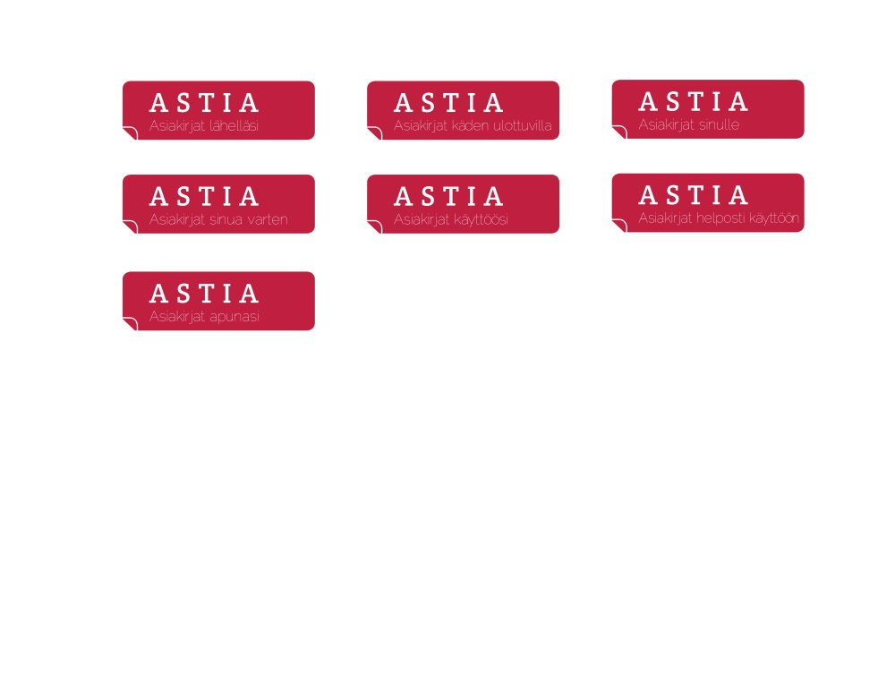
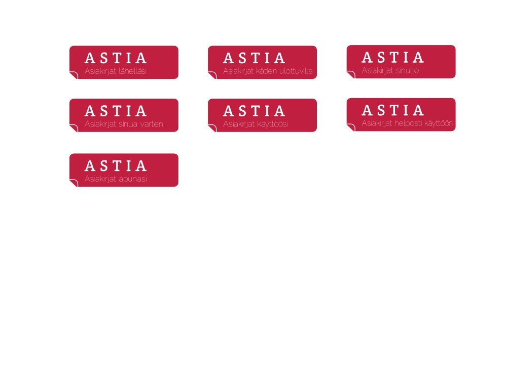

Visual update of National Archive's ASTIA landing page
Turku University Project Aces
Between november 2018 and march 2019, I participated in Turku University's
Project Aces -course.
"The Project Aces is a multidisiplinary student team training focusing
on working with a specific project. Project is a genuine development
task defined by a client."
"Programme develops competence in project management, teamwork
and problem solving. It provides experience in genuine development
challenges, working with client and working with experts from
different backgrounds."
In this project, our task was to improve the
Astia online service
for the National Archives of Finland (Old site. Launch date was supposed
to be by the end of 2019). We planned a new visual
design and services offered at the Astia service webpage.


 
